Les bases du html 1 DISPONIBLE
Les bases du html 1 DISPONIBLEHTML est l’abréviation de HyperText Markup Language, soit en français « langage hypertexte de balisage ». Ce langage a été créé en 1991 et a pour fonction de structurer et de donner du sens à du contenu.
2. Les bases en HTML
Éléments, balises et attributs
Il y a trois termes dont vous devez absolument comprendre le sens en HTML. Ce sont les termes
élément, balise et attribut.
Les éléments, tout d’abord, vont nous servir à définir des objets dans notre page. Grâce aux
éléments, nous allons pouvoir définir un paragraphe (élément p), des titres d’importances diverses
(éléments h1, h2, h3, h4, h5 et h6) ou un lien (élément a).
Les éléments sont constitués de balises. Dans la majorité des cas, un élément est constitué d’une
paire de balises : une balise ouvrante et une balise fermante.
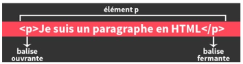
Les balises reprennent le nom de l’élément et sont entourées de chevrons. La balise fermante
possède en plus un slash qui précède le nom de l’élément.
Cependant, certains éléments ne sont constitués que d’une balise qu’on appelle alors balise
orpheline. C’est par exemple le cas de l’élément br qui va nous servir à créer un retour à la ligne.
Notez que, dans le cas des balises orphelines, le slash se situe après le nom de l’élément. Notez
également que ce slash n’est pas obligatoire et que certains développeurs l’omettent
volontairement.
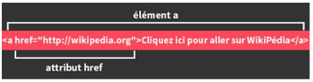
Dans l’exemple ci-dessus, on discerne l’élément a composé :
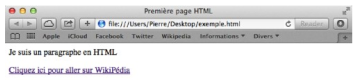
Si vous vous sentez un peu perdu pour le moment, ne vous inquiétez pas, c’est tout-à-fait normal ! Continuez le cours, vous allez voir : avec un peu de pratique, tout cela va très vite se décanter et vous aurez tout compris avant même de vous en rendre compte !
Structure de base d’une page en HTML5
En programmation comme dans beaucoup d’autres disciplines, vous l’aurez compris, il y a des règles.
Ainsi, toute page écrite en HTML5 doit comporter une certaine structure, un « squelette » qui sera toujours le même. Ce squelette est bien évidemment constitué de divers éléments
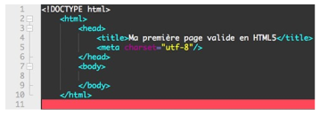
Ensuite, pour que notre page HTML5 soit valide, il va nous falloir indiquer trois nouveaux éléments : html, head (« en-tête ») et body (« corps de page »).
Pour les langues latines, nous choisirons généralement la valeur « utf-8 ». Les commentaires
Commenter son code, c’est tout simplement y ajouter des commentaires. Ces commentaires sont spéciaux : il ne seront pas visibles par vos visiteurs (à moins que ceux-ci n’affichent le code source de la page).
Voici comment on écrit un commentaire en HTML :
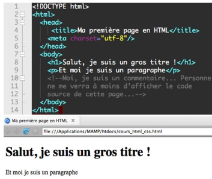
En bref : commenter n’est pas un luxe mais souvent ce qui sépare un développeur moyen d’un bon développeur, tout simplement. Listes ordonnées et non-ordonnées
Les listes servent à ordonner du contenu, à lui donner un ordre cohérent.
Visuellement, les listes en HTML correspondent à ce que vous créez lorsque vous utilisez des
puces dans un document LibreOffice :
La différence entre les listes ordonnées et non-ordonnées est que les listes ordonnées possèdent un aspect de subordination, d’ordre logique, de classement tandis que ce n’est pas le cas pour les listes non-ordonnées.
Pour créer une liste non-ordonnée, on va avoir besoin de deux nouveaux éléments : l’élément ul (abréviation de unordered list), qui va contenir toute la liste et l’élément li (pour list item) que l’on va utiliser pour créer chaque élément de la liste.
listes non-ordonnées.
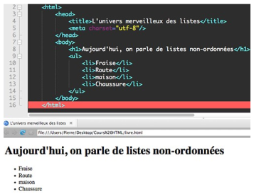
Pour créer une liste ordonnée maintenant, nous allons simplement remplacer l’élément ul par l’élément ol (pour ordered list).
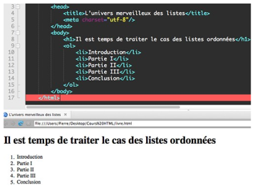
Récapitulatif des balises de base
Les balises en HTLM 5
Exercice 1 : Votre première page HTML
Ecrivez l'extrait de code HTML qui réalise ce titrage :
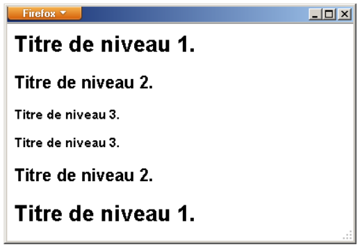
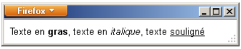
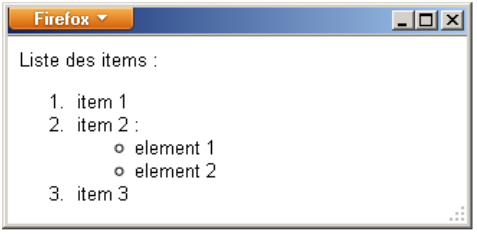
Les bases du CSS 1 DISPONIBLE
CSS signifie Cascading StyleSheets, soit « feuilles de style en cascade ». Il a été créé en 1996 et a pour rôle de mettre en forme du contenu en lui appliquant ce qu’on appelle des styles.
Pour rappel, le CSS sert à modifier l’apparence de nos pages web en appliquant des styles au contenu en HTML.
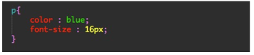
commentaires du code
Dans cet exemple, nous utilisons le sélecteur simple « p », ce qui signifie que nous souhaitons
appliquer un style particulier à tous les paragraphes de nos pages.
Nous utilisons les propriétés « color » (qui sert à modifier la couleur d’un texte) et « font-size »
(pour changer la taille d’un texte). Cela signifie donc que nous travaillerons sur la couleur et la
taille de nos paragraphes.
Enfin, nous indiquons que nous voulons que tous nos paragraphes s’affichent en bleu grâce à la
valeur « blue » et que notre texte ait une taille de 16px avec la valeur « 16px ».
Notez d’ores-et-déjà la syntaxe de notre première déclaration en CSS. On entoure les propriétés et
les valeurs avec des accolades et on place un point virgule après avoir spécifié une valeur pour
chacune de nos propriétés. Chaque propriété est séparée de sa valeur par un deux-points.
Troisième et dernière méthode enfin (la méthode recommandée) : écrire le code CSS dans un fichier séparé. Pour faire cela, nous allons déjà devoir ouvrir un nouveau fichier dans notre éditeur de texte et l’enregistrer au format « .css ». Vous pouvez le nommer « style.css ». Pensez bien à enregistrer ce fichier dans le même dossier que votre fichier HTML dont vous souhaitez modifier le style, sinon vous risquez d’avoir des problèmes. Une fois que vous avez fait cela, retournez sur votre page HTML. Nous allons maintenant devoir lier nos deux fichiers HTML et CSS. On va faire cela à l’aide d’un élément link que nous allons placer dans l’élément head de cette manière :
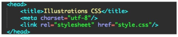Les commentaires en CSS
On a déjà vu que l’on pouvait commenter en HTML. Cela est également possible en CSS.
Les fichiers CSS deviennent rapidement très long (beaucoup plus que les fichiers HTML par
exemple) donc si vous ne commentez pas efficacement vous risquez d’être très vite perdu.
De plus, si vous distribuez votre code, je pense que la personne sera contente d’avoir quelques
lignes de commentaires pour l’aider à trouver ce qu’elle cherche au milieu de 2000 lignes de code
!
En CSS, on écrit les commentaires de cette manière :